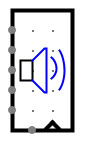

MIDI Sink
MIDI Sink
| Library: |
Audio |
| Introduced: |
5.0.3-HC |
| Appearance: |
 |
Behavior
MIDI Sink accepts MIDI audio data provided by a simulated circuit and plays
it back through the native audio system. The MIDI Sink component has data inputs
on the west edge to specify the MIDI note number, velocity, duration, and other
parameters. A write-enable input and a clock input on the south edge control the
timing of playback. When the write-enable input is 1 and the clock is triggered,
the MIDI parameters are captured and sent to the native audio system for
playback, without buffering.
A blue speaker icon indicates that the native audio system is working
properly and accepting data. A red speaker icon indicates playback errors.
A choice of interfaces is provided for how MIDI data is specified, either
serially as a byte stream, in parallel with all MIDI parameters packed
into a single 24-bit or 32-bit value, or as separate values on different pins.
- "Serial (byte)": The MIDI Sink has one 8-bit input pin. Data
from this input is a sequence of bytes following standard MIDI stream encoding.
For example, the sequence of bytes 0x91, 0x22, 0x33 encodes a MIDI NoteOn message for
channel 1, note number 0x22, velocity 0x33. This data will take at least three
clock cycles to write, since this MIDI component interface at most one byte of
input per cycle.
- "Parallel (24 bits)": The MIDI Sink has one 24-bit input pin to
specify a MIDI message with size up to 3 bytes, in either big-endian or
little-endian order, formatted as in the standard MIDI stream encoding. In that
encoding, the highest (left-most) bit of each byte is 1 for the initial
"control" byte of a message, and 0 for remaining "parameter" bytes of a message.
This distinction allows for auto-detection of endianness. If the highest
(left-most) bit of the 24-bit input value is 1, the byte order is treated as
big-endian. For example, 0x912233 is interpreted as the byte sequence 0x91,
0x22, 0x33, which encodes MIDI NoteOn message for channel 1, note number 0x22,
velocity 0x33. If the highest (left-most) bit of the 24-bit input value is 0,
the byte order is treated as little-endian. For example, 0x332291 is interpreted
as the byte sequence 0x91, 0x22, 0x33, as before. This interface is more
efficient than the "Serial (byte)" interface, because an entire 3-byte MIDI
message is transferred in a single clock cycle. MIDI messages shorter than
3-bytes must be padded to 24 bits with zeros, however.
- "Parallel (32 bits)": The MIDI Sink has one 32-bit input pin to
specify a MIDI message with size up to 3 bytes, in either big-endian or
little-endian order, formatted as in the standard MIDI stream encoding. This
interface is identical to the "Parallel (24 bits)" interface, except that all
messages must be padded with an extra zero byte. This interface is for
convenience, e.g. when building 32-bit CPU-like circuits.
- "Logisim (32 bits)": The MIDI Sink has one 32-bit input pin
which specifies playback (or release) of a single MIDI note. The format is:
xxxD CCCC IIII IIII xVVV VVVV NNNN NNNN
where:
- D is a 1-bit "Damper" control. If set to 1, all notes on this channel
are silenced so that any new note is played in isolation.
- CCCC is the 4-bit MIDI channel number to be used. If unconnected, the
Channel attribute is used as a default.
- IIIIIIIII is the 8-bit MIDI instrument to be used for notes. If left
unconnected, the Instrument attribute is used as a
default.
- VVVVVVVV is a 7-bit attack (or release) velocity number.
- NNNNNNNNN is an 8-bit note number specifying the MIDI note to be played
(or released) as a signed two's complement number. Values 1 to 127 play
a note (NoteOn). If the Auto Hold Time attribute is set to a
non-zero value, the note will automatically be released after that many
milliseconds. To manually release a note (NoteOff), negative note
numbers can be used, for example, -60 will release note 60. A note value
of zero is ignored.
- "Logisim (8+7+1+4+8 bits)": The MIDI Sink has five input pins,
all of which together specify playback (or release) of a MIDI note. All inputs
take effect together when the component is enabled and the clock is triggered.
- Channel input: The MIDI channel number to be used. If left
unconnected, the Channel attribute is used as a default.
- Input input: The MIDI channel instrument to be used for notes.
If left unconnected, the Instrument attribute is used as a
default.
- Damper input: if set to 1, all notes on this channel are silenced
so that any new note is played in isolation.
- Note input: The note to be played (or released). Values 1 to
127 play a note (NoteOn). If the Auto Hold Time attribute is
set to a non-zero value, the note will automatically be released after
that many milliseconds. To manually release a note, negative note
numbers can be used, for example, -60 will release note 60. A note value
of zero is ignored.
- Velocity input: The attack (or release) velocity.
the attack (or release) velocity.
Warning: Only a subset of MIDI is currently supported.
Pins
- South edge, left side (input, bit width 1)
- Write Enable: When this value is 1, clock triggers and MIDI playback is
enabled. When the value is 0, other inputs are ignored.
- South edge, right pin marked with triangle (input, bit width 1)
- Clock: At the instant that this is triggered as specified by the Trigger
attribute, other inputs are processed to play or release MIDI notes or
execute other MIDI commands.
- West edge (input, bit width 8, present only when interface is "Serial (byte)")
- Serial MIDI Data: accepts bytes of a standard MIDI stream. See below for
details on the "Serial (byte)" interface attribute.
- West edge (input, bit width 24 or 32, present only when interface is
"Parallel (32 bit)" or "Parallel (24 bit)")
- MIDI Command: accepts 1-byte, 2-byte, or 3-byte MIDI commands packed in
little-endian or big-endian order. See below for details on the "Parallel
(32 bit)" and "Parallel (24 bit)" and "Parallel (24 bit)" interface
attributes.
- West edge (input, bit width 32, present only when interface is "Logisim (32 bit)")
- Data: 32-bit value encoding damper, channel, instrument, velocity, and note
data. See below for details on the "Logisim (32 bit)" interface attribute.
- West edge (input, bit width 4, present only when interface is "Logisim (8+7+1+4+8 bits)")
- Channel: MIDI channel number. See below for details on the "Logisim
(8+7+1+4+8 bits)" interface attribute.
- West edge (input, bit width 1, present only when interface is "Logisim (8+7+1+4+8 bits)")
- Damping: When 1, silences other notes on this channel before playing a new
note. See below for details on the "Logisim (8+7+1+4+8 bits)" interface attribute.
- West edge (input, bit width 8, present only when interface is "Logisim (8+7+1+4+8 bits)")
- Note: MIDI note number. Positive values turn on a note. Negative values
silence the corresponding note. See below for details on the "Logisim (8+7+1+4+8 bits)" interface attribute.
- West edge (input, bit width 7, present only when interface is "Logisim (8+7+1+4+8 bits)")
- Velocity: MIDI velocity number. See below for details on the "Logisim (8+7+1+4+8 bits)" interface attribute.
- West edge (input, bit width 8, present only when interface is "Logisim (8+7+1+4+8 bits)")
- Instrument: MIDI instrument number. See below for details on the "Logisim (8+7+1+4+8 bits)" interface attribute.
Attributes
- Trigger
- Configures how the clock input is interpreted. The value
rising edge
indicates that the register should update its value at the instant when the
clock rises from 0 to 1. The falling edge
value indicates that it should
update at the instant the clock falls from 1 to 0.
- Instrument
- The default MIDI instrument to use for playback if the instrument is not
otherwise specified or is not valid. This attribute only affects playback when
the Interface attribute is set to either "Logisim (32
bits)" or "Logisim (8+7+1+4+8 bits)".
- Channel
- The default MIDI channel to use for playback if the channel is not otherwise
specified or is not valid. This attribute only affects playback when the
Interface attribute is set to either "Logisim (32 bits)" or
"Logisim (8+7+1+4+8 bits)".
- Auto Hold Time (ms)
- The default duration each MIDI note is played, in milliseconds. This
attribute only affects playback when the Interface attribute is set to
either "Logisim (32 bits)" or "Logisim (8+7+1+4+8 bits)".
- Interface
- Specifies how MIDI data is encoded. This attribute determines the number and
width of the MIDI Sink's input pins.
Poke Tool Behavior
None.
FPGA Synthesis
Not yet supported.
Up to Library Reference